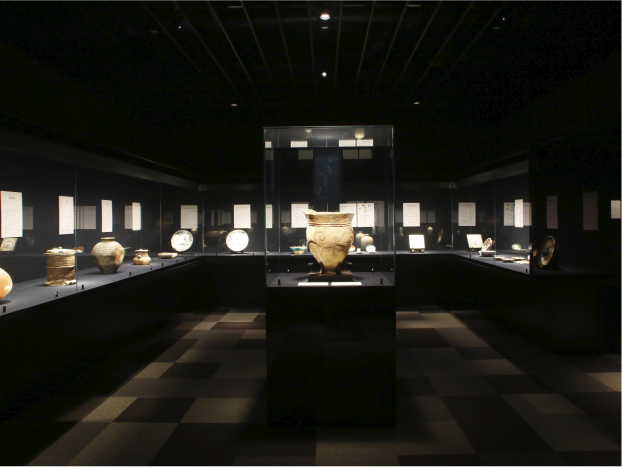

■東京黎明アートルームについて
■外装・内装

美術館としては小さめの規模ですが、だからこそ展示品は一つ一つが大切に展示されています。

日本美術、仏教美術、陶器などのコレクションが展示されています。
■マップ
| 住所 | 東京都中野区東中野2-10-13 |
| 電話 | 03-3369-1868 |
| 開室時間 | 10:00〜16:30 ※最終入室は16:00 |
| 休室日 | 不定 |
JR 東中野駅 西口より 徒歩7分
都営大江戸線 東中野駅 A3出口より 徒歩約7分
東京メトロ 東西線 落合駅 A1出口より 徒歩約14分
東京メトロ 丸の内線 中野坂上駅 2番出口より 徒歩約13分